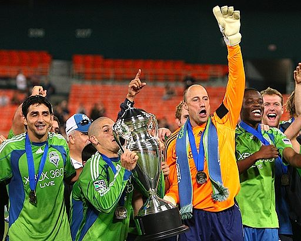

The Seattle Sounders FC have too many achievemnts to even count.
The Seattle Sounders won their first trophy in their opening year winning the US Open Cup for the first time
Credit: Tony Quinn/ISI Photos/Major League Soccer
{kind=link}
The Sounders won their next trophy in 2010 winning the US Open Cup once again
Credit: Seattle Sounders FC staff
{kind=link}
The Sounders won their third trophy in 2011 winnging the US Open Cup AGAIN
{kind=link}
Their next two tropies came in the same year in 2014 with the Sounders winning the MLS Supporter Shield (first overall in the MLS) and winning the US Open Cup AGAIN
{kind=link}
In 2016 The Sounders won the MLS Cup for the first time
Credit: SounderBruce from Seattle, United States
{kind=link}
In 2018 the Sounders had the longest winning streak in MLS history and the most consecutive post season appearences
In 2019 the Seattle Sounders added to their most consecutive playoff apperences
In 2019 the Seattle Sounders hosted and won their second MLS Cup in a 3-1 victory against Toronto FC